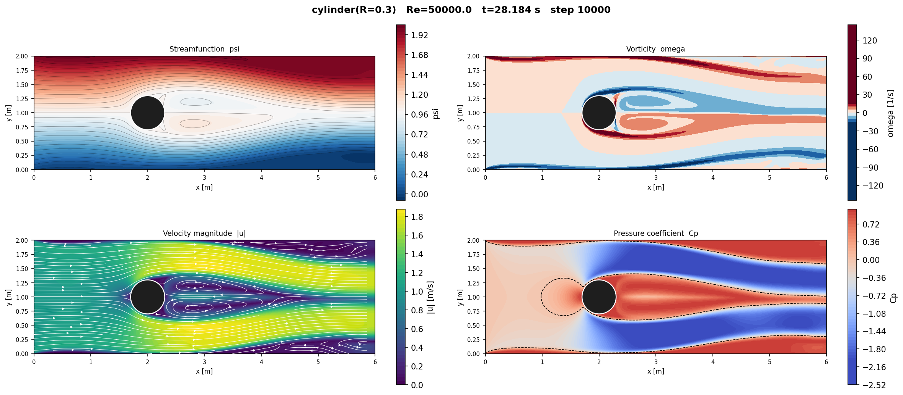
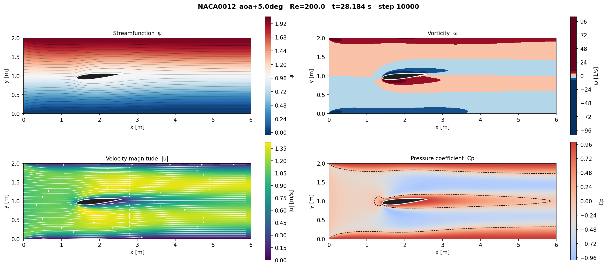
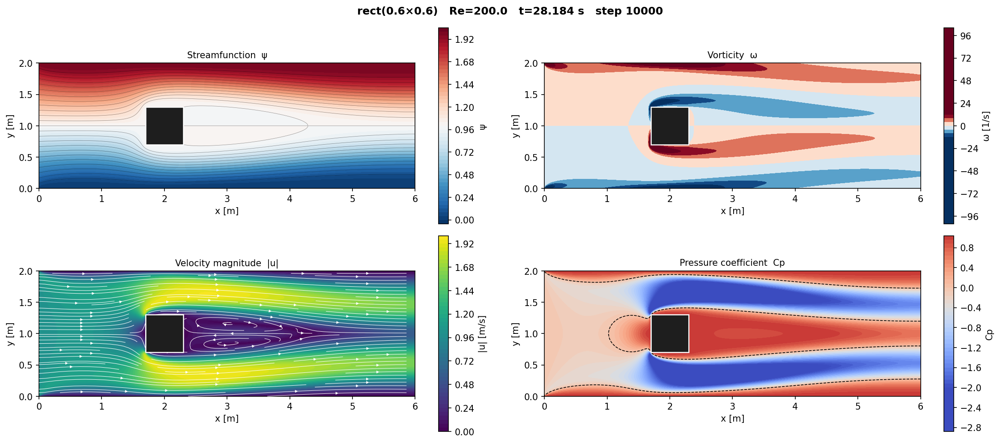
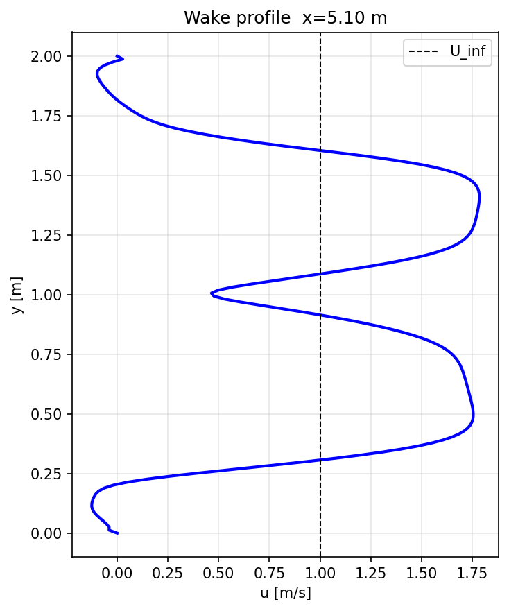
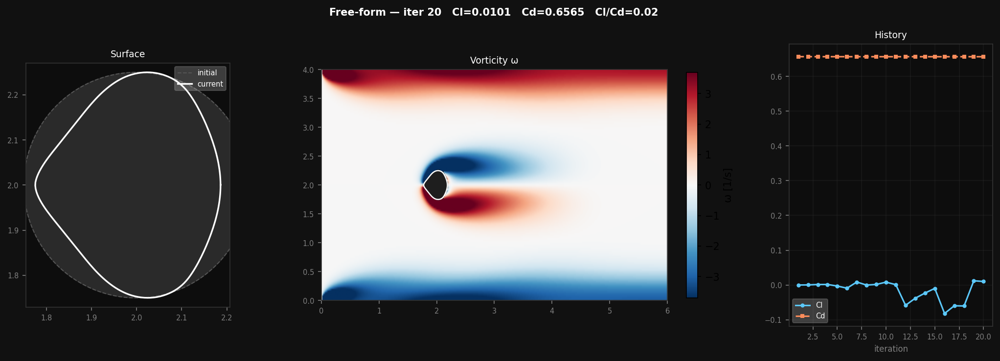

PywebCFD
2025-07-29 20:28:34
PywebCFD is a 2D incompressible Navier-Stokes solver I wrote in Python during my first year, while classes were online.
It uses a finite difference discretisation on a uniform Cartesian grid and runs in the browser through a Streamlit front end,
so the geometry and flow parameters can be set interactively and the solution watched as it develops.
The figures below show three test cases in a channel with no-slip walls: a circular cylinder, a NACA 0012 at 5°
angle of attack and a square cylinder. For each case the solver outputs the streamfunction, vorticity, velocity magnitude
and pressure coefficient fields. The bluff bodies produce a pair of recirculation bubbles behind the body, and the wall
boundary layers are visible in the vorticity field. The wake profile at x = 5.1 m shows the velocity deficit on the
centreline and the faster flow on either side, caused by the channel blockage.




Implementation notes
1. Solid bodies are imposed with a boolean mask on the Cartesian grid. This is simple to implement, but it gives a staircase
representation of curved walls, which was the main source of instability near the body. Limiting the time step through
the CFL condition and adding relaxation made the cases shown here stable, but the solver is not robust in general.
2. Because it runs on a web server, cost per time step matters more than usual, which limited both resolution and scheme order.
3. The velocity and vorticity fields are rendered as matplotlib contour images refreshed every few iterations. This kept the
display smooth without slowing the solver noticeably.
Adjoint-based optimisation
I'm currently extending the solver to adjoint-based parameter optimisation, starting with shape optimisation.
The first example is shown below: a free-form body starting from a circle, with the surface shape, the vorticity field
and the lift and drag coefficient history over the first 20 design iterations.

Limitations and next steps
1. Move to IMEX time integration (implicit viscous terms, explicit convection) to relax the viscous time step limit, along with
higher-order spatial interpolation.
2. Replace the boolean mask with an immersed boundary method so curved walls are represented without staircasing.
3. Improve general robustness and efficiency.
The app is no longer hosted.